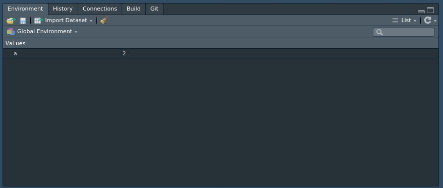
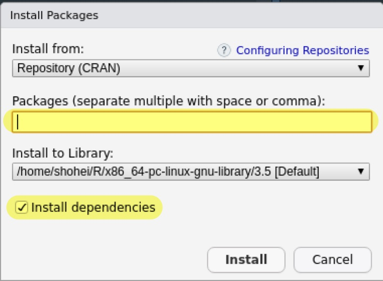
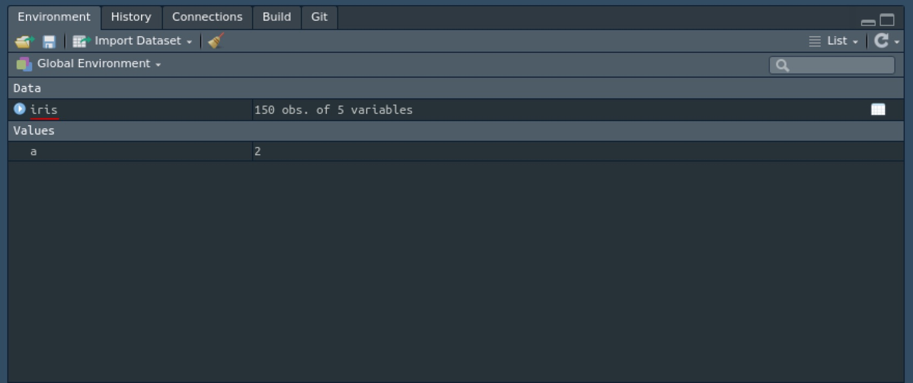
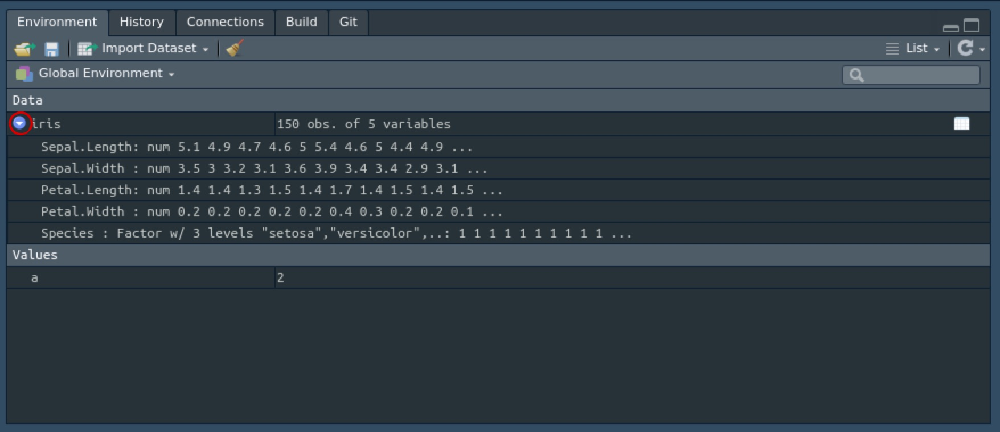

Table of Contents
はじめに
Rのコンソールでの操作方法を学びます。 コンソールの>の右側にコマンドを打ち込み、Enterを押すことで実行することができます。
まず、初めてのプログラミング言語に触るときはHello, World!を出力するのが流儀なので、以下のように実行します。
print("Hello, World!")
[1] "Hello, World!"四則演算や冪乗は以下の通りに実行できます。
3+2
[1] 5
3-2
[1] 1
3*2
[1] 6
3/2
[1] 1.5
3^2
[1] 9重要な概念
Rを使う上で重要な概念は
- オブジェクト
- 関数
- パッケージ
になるので、それぞれ説明していきます。
オブジェクト
Rでは名前をつけてオブジェクトとして保存することができます。 例えば、
a <- 2は2という数値をaという名前のオブジェクトととして生成しています。 実際に、
a
[1] 2aの中に2が入っていることが分かります。
Rでは<-を代入記号として用いますが、=を使うこともできます。
生成されたオブジェクトを使って計算することもできます。
a*3
[1] 6RStudioの場合、右上のEnvironmentパネルに生成されたオブジェクトが表示されます。

基本的にRではオブジェクトを作成し、それを加工していく形で分析を行っていきます。
関数
関数とは大雑把に言ってしまうと、何かを入力すると特定の処理を行って何かを出力するものです。 Rでは関数は関数名()という形で()の中に何かを入力します。
実はさっきのprint("Hello, World!")も"Hello, World!"という文字列をprint()という関数に入力し、文字列を表示させていたのです。
関数は様々にあるので、ここでは簡単なものでイメージを掴んでおきます。
まず、c()は複数の要素（ベクトルなど）を一つのオブジェクトとして作成する関数です。 例えば、1, 3, 5を要素に持つxというベクトルを作ってみます。
x <- c(1, 3, 5)
x
[1] 1 3 5これをsum()という関数に入力すると総和が出力されます。
sum(x)
[1] 9平均を求めるときにはmean()を使います。
mean(x)
[1] 3このように、Rではオブジェクトを関数に入力して処理を行っていきます。
パッケージ
Rには標準でもいろいろな関数がありますが、世界中で様々な人が関数を作成し、それをまとめたものをパッケージ（ライブラリ）としてCRANやGitHubで公開しています。
これらは全て無料でダウンロードすることができます。 最近では、新しい分析手法を考案した研究者はRやPythonでパッケージを公開することが多いです。 これがRの魅力の一つだと言えます。
パッケージを使うにはインストールと読み込みの2つの手順が必要になります。
CRANからのインストール
まず、パッケージをインストールするにはCRANのパッケージであればinstall.packages()を使うか、RStudioであれば右下のPackagesパネルから行います。
Installをクリックし、

インストールしたいパッケージ名を入力して、

Installを選択します。
試しに、tidyverseと呼ばれる便利なパッケージをインストールしてみてください。 コマンドで行う場合は、次のようにします。
install.packages("tidyverse")なお、パッケージのアップデートはRStudioであればPackages > Update、コマンドであれば再インストールによって行えます。
パッケージの読み込み
パッケージは一度インストールすると再度インストールする必要はありません。 しかし、パッケージを使う場合は最初にlibrary()によって読み込む必要があります。
library(tidyverse)
── Attaching packages ───────────────────────────────────────────────────────────────────────────────────────────────────────── tidyverse 1.2.1 ──
✔ ggplot2 3.1.0 ✔ purrr 0.3.2
✔ tibble 2.1.1 ✔ dplyr 0.8.0.1
✔ tidyr 0.8.3 ✔ stringr 1.4.0
✔ readr 1.3.1 ✔ forcats 0.4.0
── Conflicts ──────────────────────────────────────────────────────────────────────────────────────────────────────────── tidyverse_conflicts() ──
✖ dplyr::filter() masks stats::filter()
✖ dplyr::lag() masks stats::lag()GitHubからのインストール*
GitHub上のパッケージをインストールする場合はdevtoolsというパッケージを使うので、まずはインストールと読み込みを行います。
install.packages("devtools")
library(devtools)インストールにはinstall_github()を使いますが、入力はパッケージ名ではなくユーザー名/レポジトリ名となる点に注意してください。
データフレーム
Rで統計分析を行う場合、データフレームと呼ばれるオブジェクトを扱うことになります。 基本的には外部からデータを読み込むのですが、まずはデモデータで練習します。
Rやパッケージにはデモデータが含まれています。 data()を実行すると一覧が表示されます。 ここでは、有名なフィッシャーのアヤメのデータを使います。
data(iris)Environmentパネルにirisが表示されたかと思います。
データの概観
データをインポートした際にはどのようなデータなのかをチェックすることが大事です。 EnvironmentパネルのDataの欄のオブジェクト名（ここではiris）をクリックするとデータの中身を見ることができます。

同様のことは次のコマンドでも可能です。
View(iris)必ずしも全てのデータを見る必要はない場合、head()によって冒頭の5つまでを見ることができます。
head(iris)
Sepal.Length Sepal.Width Petal.Length Petal.Width Species
1 5.1 3.5 1.4 0.2 setosa
2 4.9 3.0 1.4 0.2 setosa
3 4.7 3.2 1.3 0.2 setosa
4 4.6 3.1 1.5 0.2 setosa
5 5.0 3.6 1.4 0.2 setosa
6 5.4 3.9 1.7 0.4 setosaデータフレームでは基本的に横方向（行方向）に観察単位（ここではひとつひとつのアヤメ）があり、縦方向（列方向）に変数（ここではがく片と花弁の長さと幅および品種）が並んでいます。
各変数の記述統計を見たい場合はsummary()を使います。
summary(iris)
Sepal.Length Sepal.Width Petal.Length Petal.Width Species
Min. :4.300 Min. :2.000 Min. :1.000 Min. :0.100 setosa :50
1st Qu.:5.100 1st Qu.:2.800 1st Qu.:1.600 1st Qu.:0.300 versicolor:50
Median :5.800 Median :3.000 Median :4.350 Median :1.300 virginica :50
Mean :5.843 Mean :3.057 Mean :3.758 Mean :1.199
3rd Qu.:6.400 3rd Qu.:3.300 3rd Qu.:5.100 3rd Qu.:1.800
Max. :7.900 Max. :4.400 Max. :6.900 Max. :2.500 数値データについては最小値、25%分位点、中央値、平均値、75%分位点、最大値が表示され、カテゴリカル変数についてはそれぞれの値の観察数が表示されます。
str()によって観察数（サンプルサイズ）、変数の数、変数の種類を確認することもできます。
str(iris)
'data.frame': 150 obs. of 5 variables:
$ Sepal.Length: num 5.1 4.9 4.7 4.6 5 5.4 4.6 5 4.4 4.9 ...
$ Sepal.Width : num 3.5 3 3.2 3.1 3.6 3.9 3.4 3.4 2.9 3.1 ...
$ Petal.Length: num 1.4 1.4 1.3 1.5 1.4 1.7 1.4 1.5 1.4 1.5 ...
$ Petal.Width : num 0.2 0.2 0.2 0.2 0.2 0.4 0.3 0.2 0.2 0.1 ...
$ Species : Factor w/ 3 levels "setosa","versicolor",..: 1 1 1 1 1 1 1 1 1 1 ...同様のことは、Environment > Dataのオブジェクト名の左の青い丸ボタンを押してもできます。

データの要素へのアクセス
データを加工するためにはデータの要素へアクセスする必要があります。
変数へのアクセス
変数にアクセスする場合、オブジェクト名$変数名のように$を使います。
iris$Species
[1] setosa setosa setosa setosa setosa setosa setosa setosa
[9] setosa setosa setosa setosa setosa setosa setosa setosa
[17] setosa setosa setosa setosa setosa setosa setosa setosa
[25] setosa setosa setosa setosa setosa setosa setosa setosa
[33] setosa setosa setosa setosa setosa setosa setosa setosa
[41] setosa setosa setosa setosa setosa setosa setosa setosa
[49] setosa setosa versicolor versicolor versicolor versicolor versicolor versicolor
[57] versicolor versicolor versicolor versicolor versicolor versicolor versicolor versicolor
[65] versicolor versicolor versicolor versicolor versicolor versicolor versicolor versicolor
[73] versicolor versicolor versicolor versicolor versicolor versicolor versicolor versicolor
[81] versicolor versicolor versicolor versicolor versicolor versicolor versicolor versicolor
[89] versicolor versicolor versicolor versicolor versicolor versicolor versicolor versicolor
[97] versicolor versicolor versicolor versicolor virginica virginica virginica virginica
[105] virginica virginica virginica virginica virginica virginica virginica virginica
[113] virginica virginica virginica virginica virginica virginica virginica virginica
[121] virginica virginica virginica virginica virginica virginica virginica virginica
[129] virginica virginica virginica virginica virginica virginica virginica virginica
[137] virginica virginica virginica virginica virginica virginica virginica virginica
[145] virginica virginica virginica virginica virginica virginica
Levels: setosa versicolor virginicaほぼ同じことがiris["Species"]でもできます。
変数名ではなく列番号でも指定できます。
iris[,5]
[1] setosa setosa setosa setosa setosa setosa setosa setosa
[9] setosa setosa setosa setosa setosa setosa setosa setosa
[17] setosa setosa setosa setosa setosa setosa setosa setosa
[25] setosa setosa setosa setosa setosa setosa setosa setosa
[33] setosa setosa setosa setosa setosa setosa setosa setosa
[41] setosa setosa setosa setosa setosa setosa setosa setosa
[49] setosa setosa versicolor versicolor versicolor versicolor versicolor versicolor
[57] versicolor versicolor versicolor versicolor versicolor versicolor versicolor versicolor
[65] versicolor versicolor versicolor versicolor versicolor versicolor versicolor versicolor
[73] versicolor versicolor versicolor versicolor versicolor versicolor versicolor versicolor
[81] versicolor versicolor versicolor versicolor versicolor versicolor versicolor versicolor
[89] versicolor versicolor versicolor versicolor versicolor versicolor versicolor versicolor
[97] versicolor versicolor versicolor versicolor virginica virginica virginica virginica
[105] virginica virginica virginica virginica virginica virginica virginica virginica
[113] virginica virginica virginica virginica virginica virginica virginica virginica
[121] virginica virginica virginica virginica virginica virginica virginica virginica
[129] virginica virginica virginica virginica virginica virginica virginica virginica
[137] virginica virginica virginica virginica virginica virginica virginica virginica
[145] virginica virginica virginica virginica virginica virginica
Levels: setosa versicolor virginica列番号なので、カンマの右側で指定している点に注意してください。
マイナスを使うと、それ以外を指定します。
head(iris[,-5])
Sepal.Length Sepal.Width Petal.Length Petal.Width
1 5.1 3.5 1.4 0.2
2 4.9 3.0 1.4 0.2
3 4.7 3.2 1.3 0.2
4 4.6 3.1 1.5 0.2
5 5.0 3.6 1.4 0.2
6 5.4 3.9 1.7 0.4ベクトルで複数の変数を指定することもできます。
head(iris[,c(1,3)])
Sepal.Length Petal.Length
1 5.1 1.4
2 4.9 1.4
3 4.7 1.3
4 4.6 1.5
5 5.0 1.4
6 5.4 1.7観察へのアクセス
特定の観察にのみアクセスすることもできます。
iris[1,]
Sepal.Length Sepal.Width Petal.Length Petal.Width Species
1 5.1 3.5 1.4 0.2 setosaこれは1番目の観察にアクセスしていますが、行番号で指定しているので、カンマの左側にあります。
あまり意味はないですが、行と列を同時に指定することもできます。
iris[1,1]
[1] 5.1実際には特定の条件に合致した観察のみを抜き出すことが多いです。 例えば、Speciesがversicolorであるものだけを抜き出す場合には
head(iris[iris$Species == "versicolor",])
Sepal.Length Sepal.Width Petal.Length Petal.Width Species
51 7.0 3.2 4.7 1.4 versicolor
52 6.4 3.2 4.5 1.5 versicolor
53 6.9 3.1 4.9 1.5 versicolor
54 5.5 2.3 4.0 1.3 versicolor
55 6.5 2.8 4.6 1.5 versicolor
56 5.7 2.8 4.5 1.3 versicolorとします。
これは何をしているのでしょうか？
行を選択しているのはiris$Species == "versicolor"ですが、左辺は先程見たように品種を抜き出しています。 そして、==は右辺と左辺が一致しているかどうかを判定する記号になります。 実際に、これだけを実行してみると
iris$Species == "versicolor"
[1] FALSE FALSE FALSE FALSE FALSE FALSE FALSE FALSE FALSE FALSE FALSE FALSE FALSE FALSE FALSE
[16] FALSE FALSE FALSE FALSE FALSE FALSE FALSE FALSE FALSE FALSE FALSE FALSE FALSE FALSE FALSE
[31] FALSE FALSE FALSE FALSE FALSE FALSE FALSE FALSE FALSE FALSE FALSE FALSE FALSE FALSE FALSE
[46] FALSE FALSE FALSE FALSE FALSE TRUE TRUE TRUE TRUE TRUE TRUE TRUE TRUE TRUE TRUE
[61] TRUE TRUE TRUE TRUE TRUE TRUE TRUE TRUE TRUE TRUE TRUE TRUE TRUE TRUE TRUE
[76] TRUE TRUE TRUE TRUE TRUE TRUE TRUE TRUE TRUE TRUE TRUE TRUE TRUE TRUE TRUE
[91] TRUE TRUE TRUE TRUE TRUE TRUE TRUE TRUE TRUE TRUE FALSE FALSE FALSE FALSE FALSE
[106] FALSE FALSE FALSE FALSE FALSE FALSE FALSE FALSE FALSE FALSE FALSE FALSE FALSE FALSE FALSE
[121] FALSE FALSE FALSE FALSE FALSE FALSE FALSE FALSE FALSE FALSE FALSE FALSE FALSE FALSE FALSE
[136] FALSE FALSE FALSE FALSE FALSE FALSE FALSE FALSE FALSE FALSE FALSE FALSE FALSE FALSE FALSEとなります。 つまり、iris$Species == "versicolor"はirisデータのSpeciesのなかでversicolorと一致するものをTURE、一致しないものをFALSEとしており、TRUEだけの列を指定することで特定の観察だけにアクセスしてるということになります。
データの加工
アクセスした要素を上書きすることでデータを加工することができます。 例えば、Sepal.Lengthを10倍にするには以下のように行います。
iris$Sepal.Length <- 10*iris$Sepal.Length
head(iris)
Sepal.Length Sepal.Width Petal.Length Petal.Width Species
1 51 3.5 1.4 0.2 setosa
2 49 3.0 1.4 0.2 setosa
3 47 3.2 1.3 0.2 setosa
4 46 3.1 1.5 0.2 setosa
5 50 3.6 1.4 0.2 setosa
6 54 3.9 1.7 0.4 setosa$以降を新しい変数名とすることで変数を新たに加えることができます。
iris$Petal.LengthXWidth <- iris$Petal.Length * iris$Petal.Width
head(iris)
Sepal.Length Sepal.Width Petal.Length Petal.Width Species Petal.LengthXWidth
1 51 3.5 1.4 0.2 setosa 0.28
2 49 3.0 1.4 0.2 setosa 0.28
3 47 3.2 1.3 0.2 setosa 0.26
4 46 3.1 1.5 0.2 setosa 0.30
5 50 3.6 1.4 0.2 setosa 0.28
6 54 3.9 1.7 0.4 setosa 0.68もちろん、列を指定することで特定の条件に合致したサンプルの変数だけを加工することもできます。 例えば、stosaのSepal.Lengthだけをもとに戻します。
iris[iris$Species == "setosa",]$Sepal.Length <-
iris[iris$Species == "setosa",]$Sepal.Length/10
head(iris[iris$Species == "setosa",])
Sepal.Length Sepal.Width Petal.Length Petal.Width Species Petal.LengthXWidth
1 5.1 3.5 1.4 0.2 setosa 0.28
2 4.9 3.0 1.4 0.2 setosa 0.28
3 4.7 3.2 1.3 0.2 setosa 0.26
4 4.6 3.1 1.5 0.2 setosa 0.30
5 5.0 3.6 1.4 0.2 setosa 0.28
6 5.4 3.9 1.7 0.4 setosa 0.68
head(iris[iris$Species == "versicolor",])
Sepal.Length Sepal.Width Petal.Length Petal.Width Species Petal.LengthXWidth
51 70 3.2 4.7 1.4 versicolor 6.58
52 64 3.2 4.5 1.5 versicolor 6.75
53 69 3.1 4.9 1.5 versicolor 7.35
54 55 2.3 4.0 1.3 versicolor 5.20
55 65 2.8 4.6 1.5 versicolor 6.90
56 57 2.8 4.5 1.3 versicolor 5.85おまけ
Rで困ったときにすることは、まずググることです。 特に英語でググるといいでしょう。 エラーメッセージが出たときはそれをそのままコピペして検索します。
他に、Rの情報を知りたいけど余計な情報が混ざっているときはseekRで検索します。
Stack OverflowはRに限らずPCやプログラミングについて質問する掲示板です。
r-wakalangというSlackもあるそうです。
Qiitaは様々なプログラミングに関する情報を共有するサイトです。
関数の使い方が分からないときはヘルプを見ましょう。 例えばmean()のヘルプを見たいときは
?meanもしくは
help(mean)でヘルプを表示させることができます。
同じものはCRANにあるパッケージのドキュメントにもあります。
パッケージを作成した研究者はしばしばJournal of Statistical Softwareに使い方に関するペーパーを載せているのでそれも参考になります。